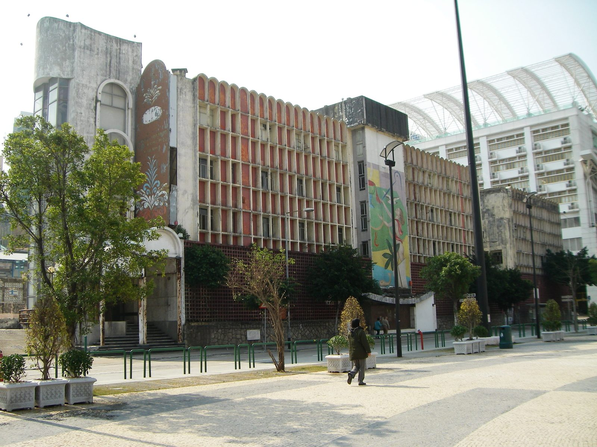
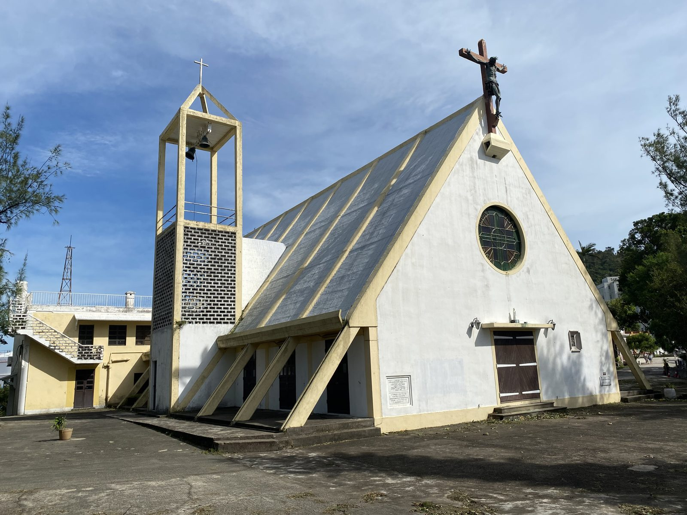
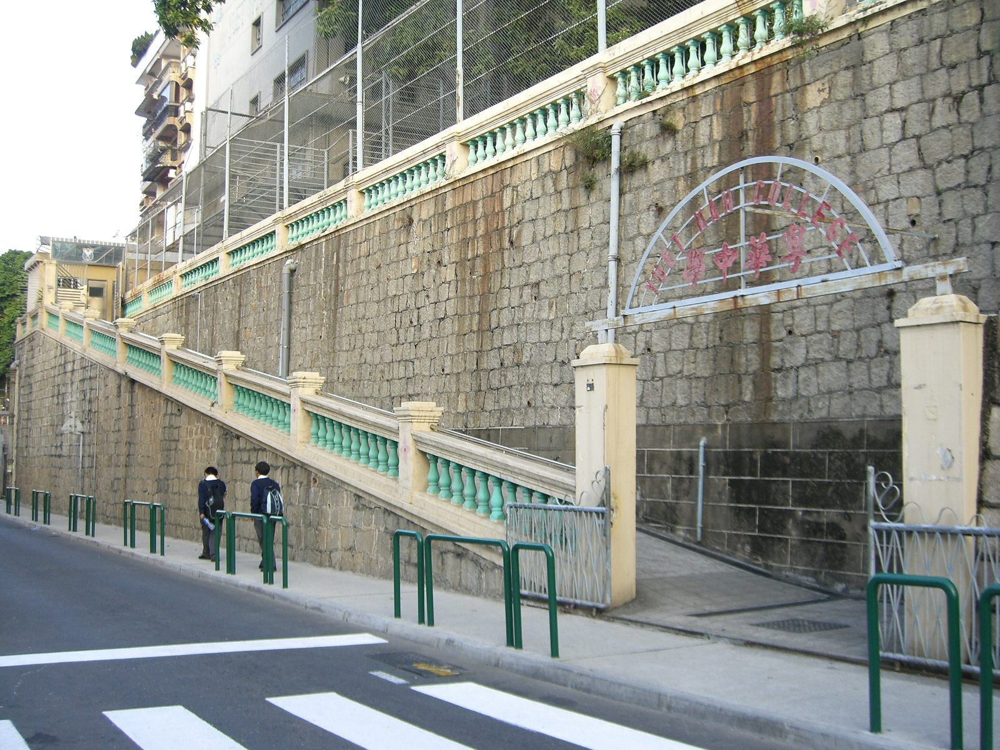
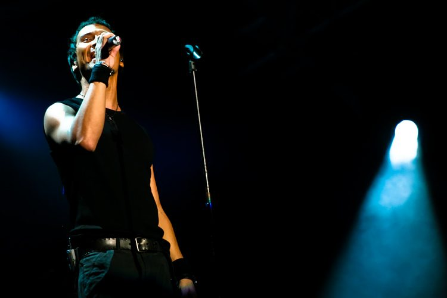
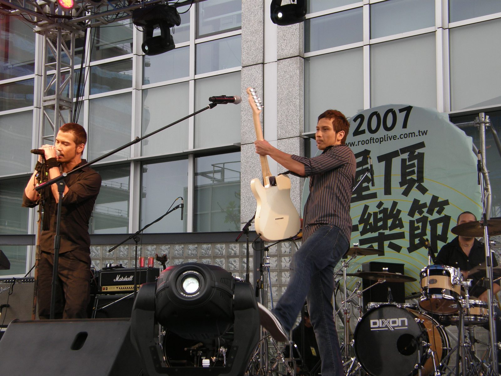
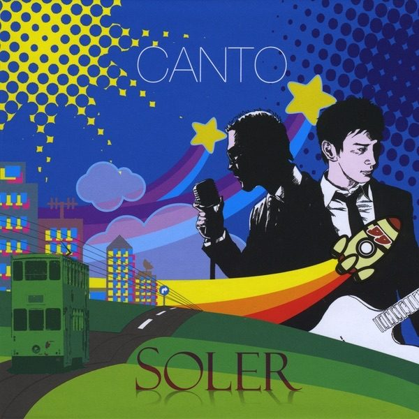
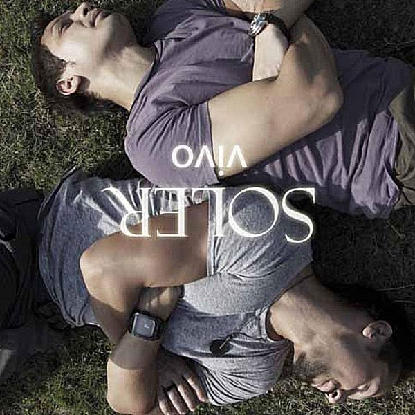

09 中国澳门 · MACAO 2005–今
Soler（太陽系）THE LENGTH OF A SONG · 给我一首歌的时间
地区 中国澳门
成员 夏利奥 Giulio Acconci ／ 夏健龙 Dino Acconci
本期歌曲 〈失魂〉3:10.64
一对意大利与缅甸混血的双胞胎，在澳门出生长大，去意大利出唱片，回澳门唱歌，然后带着一首粤语歌打进香港——又因为一纸合约，被法院判到破产。澳门政府后来给他们颁了一张奖状。
基本资料 Fact Sheet
队名 Soler——取自母亲的姓氏。意大利语里 solare 与「太阳」同源，台湾官方中文名作「太阳系」，但多数人直接叫 Soler[1]
成员 哥哥 Giulio Acconci（夏利奥）：主唱、低音吉他；弟弟 Dino Acconci（夏健龙／夏天乐）：主唱、吉他。双胞胎，1972 年 9 月 9 日生于澳门[1] [2]
客席 吉他 Andrew、低音吉他 Siu Ming、鼓 Dave Simpson（不固定）[1]
出身 父亲意大利裔，母亲缅甸克伦族；两人在澳门出生长大，毕业于澳门粤华中学[1] [2]
活跃 2005 年至今（在香港主流乐坛）；以 Soler 之名发片最早可追溯到 1997 年的意大利[1]
代表作 〈失魂〉〈海嘯〉（2005《雙聲道》）[10] [1]
语言 粤语、普通话、英语、意大利语、西班牙语、葡萄牙语，Dino 兼通一点法语[1]
一 澳门生人
大三巴牌坊 。Soler 兄弟出生的 1972 年，澳门还是葡萄牙管治下的「葡属澳门」。摄／Ank Kumar（CC BY-SA 4.0，Wikimedia Commons）
1972 年 9 月 9 日，Giulio 与 Dino Acconci 这对双胞胎出生在澳门。父亲夏刚志（Oseo Acconci，1905–1988）是 1939 年移居澳门的意大利人，母亲是缅甸克伦族人[1] [15]
夏刚志不是登记在册的建筑师，而是开建筑公司的营造商——但他既承造楼房，也做设计、做雕塑和壁画[16] [17] [16] [18] [15]

爱都酒店 。外墙的幸运女神马赛克壁画出自夏刚志之手，建于 1964 至 1965 年间。摄／Whhalbert（CC BY-SA 4.0，Wikimedia Commons，2008）

九澳七苦圣母小堂 ，1966 年启用，夏刚志建造，澳门现代建筑里的孤例。摄／LN9267（CC BY-SA 4.0，Wikimedia Commons，2023）
兄弟俩读完澳门粤华中学——一所天主教男校[2] [1]

粤华中学 。兄弟二人的中学母校。摄／cdip150（公有领域，Wikimedia Commons，2007）
二 从意大利唱回澳门
以 Soler 之名发的第一批唱片不在亚洲。1997 年，意大利 EMI 替他们出了 EP《Un Posto Per Noi》，翌年再有《Tears In Your Hands》[1] [2]
真正把他们拉进华语乐坛的是 Beyond 的吉他手黄贯中。2000 至 2001 年，Dino 先以作曲人身份进香港乐坛——陈奕迅的〈送院途中〉〈和平饭店〉、梁汉文的〈超级英雄〉都出自他手——然后被黄贯中叫去香港面试，进了他单飞后组的乐队「汗」当吉他手。面试那次，黄贯中还把跟着来的哥哥误认成了弟弟[1] [2]
黄贯中 。Beyond 前吉他手，后来给 Soler 填了〈海嘯〉等多首粤语词。Wikimedia Commons（公有领域）
2003 到 2004 年，兄弟俩与澳门鼓手歌手恭硕良等乐手，常在澳门荷兰园二马路的 Friday 酒吧演出[1] [2]
三 2005，把粤语唱给香港听
2005 年，Soler 签约香港蜂鸟音乐，发行首张粤语专辑《雙聲道》。派台的〈失魂〉一上电台，听众记住的是「一支用粤语唱歌的外籍乐队」[2] [10]
2005.7 《雙聲道》发行 。首张粤语专辑，11 首歌，粤语、普通话、英语混着唱[11] [12] [8] [1] [12] 2005.10 澳门第四届东亚运动会开幕 。会歌〈We Will Shine（让我们闪亮）〉由 Soler 主唱，有粤语、国语、英语三个版本，两人并在开闭幕式演唱[7] [14] 2005.12 《直覺》发行 （12 月 19 日），同名主打歌拿下 TVB 劲歌金榜冠军[1] [2] 2006.4 登上红磡体育馆 。出道不到一年开红馆个唱，请来黄贯中、莫文蔚做嘉宾[2] 2006 年底 与蜂鸟音乐决裂 。要求解约时，创办人张丹开出 2,000 万元的条件，两人转身离开；随后遭入禀告毁约，索偿 2,400 万元[1] 2007.8 案件在香港区域法院开审 。乐队支持者架设 SaveSolerMusic 网站声援；Soler 自组 K-Town Music，独立制作发行《X2》[1] 2009.1 高等法院判 Soler 毁约 ，须赔偿蜂鸟约 505 至 506 万港元（连同利息约 600 万）[1] [5] 2009.12 澳门特区政府授予功绩奖状 。第 119/2009 号行政命令，2009 年 12 月 17 日由行政长官何厚铧签署[4] [6] 2012.11 香港高院颁令两人破产 。蜂鸟方面称只收到 20 多万港元还款[5] 2018 《Evolution·演化》发行 ，同年推出〈兄弟〉[1] 2025 〈翻天覆地〉 登上新城劲爆流行榜本地榜第 3 位——出道二十年后仍在出单曲[1]
四 经典歌曲赏析 · 〈失魂〉
〈失魂〉 · 3:10.64
《雙聲道》第 1 轨 · 2005 · 粤语 · 填词 胡家兆、黄贯中 · 作曲 Dino Acconci · 编曲 Lupo Groinig、Skot Suyama[3]
我未死心 死守在附近
去等你转身 是否太天真
从此再不分 不分年月日
到断气都甘心 为咗一个人
可以认识你 算今生我走运
等一世都等 愿为你等
不知道怎麽去 安守我本份
因我已经失魂
歌词节选（副歌段），录词／黄贯中、胡家兆，曲／Dino Acconci。文本取自网易云音乐，按原文保留粤语句式「为咗」「怎麽」[13]
粤语不是他们的书面语，却是他们的口语
这对双胞胎会说粤语，但认识的汉字不多。快懂百科记下一个细节：录音时他们要拼拼音、背歌词，有两首歌重录了四五次[10] [1] [3]
一首「不是他们想要的风格」的歌
乐队成员后来自己说过：《失魂》是按经纪公司的方向创作的，并不是 Soler 想要的风格 [10] [9] [3] [10] [8]
它为什么成立
歌曲三分钟出头（Apple Music 与网易云音乐一致记 3:10.64[11] [13] [1] 至爱歌曲金奖 ，Soler 同时被评为「最受欢迎歌手」[3]
这里有个时间上的反讽：一支澳门乐队，要先用香港的排行榜证明自己，然后才被澳门的电台奖认回来。〈失魂〉是这支乐队把这件事走完的那一步。
本页选择，非榜单结论。 「最经典一首」没有权威榜单。本页选〈失魂〉的依据是：① 澳广视至爱新听力第三届至爱歌曲金奖＋最受欢迎歌手（澳门官方电台奖）
[3] ；② 各百科普遍将〈失魂〉列在代表作品首位
[10] ；③ 903 第 2 位是他们原创粤语歌在主流电台的最高名次之一
[1] 。其他来源点名的还有：〈海嘯〉（第一主打，四台均有名次）、〈直覺〉与〈風的季節〉（TVB 劲歌金榜冠军，后者为翻唱徐小凤）
[1] 。
五 六百万，和一张奖状
2009 年 1 月，香港高等法院判 Soler 毁约；同年 12 月，澳门特区政府行政长官何厚铧签署第 119/2009 号行政命令，授予 Soler – Dino and Giulio 功绩奖状 [4] [6]
三年后的 2012 年 11 月 21 日，香港高院因两人长期未还款，颁令破产。蜂鸟方面称只收到 20 多万港元还款，老板张丹在庭外说「打官司不是为了口气，钱就一定要还」[5] [19]

2007 年 7 月 7 日，上海 Live Earth 。东方明珠塔下的中国站演出，是兄弟俩官司缠身的那两年里少数的大舞台。摄／Tim Wang（CC BY-SA 2.0，Wikimedia Commons）

2007 年，台湾屋顶音乐节 。左为主唱 Julio，右二为吉他手 Dino。摄／楊公（CC BY-SA 2.0，Flickr，Wikimedia Commons，2007）
六 后来
2009 年的《Canto》是首张全粤语大碟，翻唱徐小凤的〈風的季節〉拿下 TVB 劲歌金榜冠军；2010 年《Vivo》，2018 年《Evolution·演化》[1] [2] [1]

《Canto》（2009）封面 · Apple Music 
《Vivo》（2010）封面 · Apple Music
七 延伸推荐
〈海嘯〉2005 · 《雙聲道》
黄贯中作词，写他们多年「怀才不遇」的爬坡路——清新的木吉他前奏之后，是这支乐队在欧洲与亚洲之间来回的那口气[8] [2]
〈風的季節〉2009 · 《Canto》
翻唱徐小凤，拿下 TVB 劲歌金榜冠军。双胞胎的和声把一首 1981 年的老歌改成了摇滚版，是他们在香港成绩最好的一首歌[1]
八 本期短片
资料短片与〈失魂〉全曲等长（3:11 ，190.64 秒，音源实测），共 14 段画面：澳门大三巴牌坊、爱都酒店与九澳七苦圣母小堂（父亲夏刚志留在澳门的三件作品）、粤华中学、黄贯中、2007 年上海 Live Earth 与台湾屋顶音乐节现场、《雙聲道》与《Canto》封面，以及〈失魂〉词曲编曲卡、2005 年澳门双事卡。配音版正片待解说稿定稿后制作；本站嵌入的是无声资料版。
本片不含音频 （与全曲 3:11 等长），请同步播放 Soler〈失魂〉。画面全部为真实素材：Wikimedia Commons 照片、Apple Music 专辑封面；本期未使用 AI 生成影像。
本期歌曲 3 分 11 秒 。解说共 11 段，加片头念白与片尾留白；粤语歌词只上字幕、不用普通话念，歌词留白页放在全片最后一段，无人说话。
九 来源分歧
事项 各来源说法 《雙聲道》发行日期 2005 年 7 月 1 日（百度百科[9] [1] [10] [2] [12] [11] 意大利 EMI 首张 EP 年份 1996 年（英文维基「1996 年签约 EMI Italy 并发行首支欧洲单曲」[2] [1] 回澳门定居年份 1999 年（英文维基[2] [1] 与蜂鸟音乐的分歧起点 2005 年签约（中文维基[1] [5] 毁约赔偿金额 505 万港元（中新网 2012[5] [1] 《失魂》编曲 Lupo Groinig、Skot Suyama（澳大图书馆至爱新听力入选名单、百度百科[3] [9] [10] 2005 年「第一张专辑」 CCTV 2005 年报道作「今年 7 月在澳门发行两人的第一张音乐专辑《紧箍咒》」[14] 出道到红馆的时间纪录 「出道最短时间登上红馆的乐队」说法见于搜狗百科等[10]
十 资料来源
Soler — 中文维基百科（引其奖项、成员、年表与蜂鸟纠纷各节） https://zh.wikipedia.org/wiki/Soler
Soler (band) — English Wikipedia https://en.wikipedia.org/wiki/Soler_(band)
第三届澳广视至爱新听力（2005）得奖名单 — 澳门大学图书馆「澳门音乐」资料库 https://library.um.edu.mo/resources/electronic_resources/macau_music/newheart/newheart_3
第 119/2009 号行政命令：授予 Soler – Dino and Giulio 功绩奖状 — 澳门特别行政区公报第 50 期（2009-12-18 刊登） https://bo.dsaj.gov.mo/bo/i/2009/50/ordem119_cn.asp
〈混血美男组合被东家索赔 600 万 遭法院判破产〉 — 中国新闻网 2012-11-23 https://www.chinanews.com.cn/yl/2012/11-23/4354003.shtml
〈澳门特首崔世安首次授勋 获嘉奖人士创历年之最〉 — 中国新闻网 2010-01-30 https://www.chinanews.com.cn/ga/ga-sszqf/news/2010/01-30/2100376.shtml
〈东亚运动会开幕 吴仪宣布开幕 点火仪式平民化〉 — 新浪体育 2005-10-30 https://sports.sina.com.cn/s/2005-10-30/1133694913s.shtml
《双声道》专辑鉴赏 — 百度百科 https://baike.baidu.com/item/双声道/18540578
〈失魂〉 — 百度百科（词曲编曲、获奖与「并非组合自身风格」表述） https://baike.baidu.com/item/失魂/61131722
《双声道》 — 快懂百科（录音细节、制作人、成员表述） https://baike.com/wikiid/4677805816174228158
雙聲道 — Apple Music（HK），曲目时长以本页为准 https://music.apple.com/hk/album/6768781422
Release 「雙聲道」 — MusicBrainz，Release ID 1ca58b39-e86d-4fe2-b3de-4b379c6f7922 https://musicbrainz.org/release/1ca58b39-e86d-4fe2-b3de-4b379c6f7922
〈失魂〉歌词 — 网易云音乐（歌曲 ID 29418104，时长 190.64 秒） https://music.163.com/#/song?id=29418104
〈体育故事：东亚开幕式绚丽多彩〉 — 央视网 2005-10-28 https://www.cctv.com/sports/20051028/102622.shtml
Macau's Futurist Woman — Macau Closer（Acconci 家族谈爱都壁画与父亲作品） https://macaucloser.com/featured/macaus-futurist-woman/
〈九澳七苦圣母小堂〉 — 澳门特别行政区政府新闻局 https://www.gcs.gov.mo/detail/zh-hans/M20GAVlmSP
〈澳门「爱都女神」〉 — 澳门日报 2024-02（夏刚志生平与作品清单） https://xiangyu-macau.oss-cn-hongkong.aliyuncs.com/app/szb/pc/content/202402/02/content_317386.html
〈一座竹湾的小石屋〉 — 澳门日报 2023-11-26（夏刚志在澳作品补充） https://appimg.modaily.cn/app/szb/pc/content/202311/26/content_303944.html
〈混血双胞胎乐团 SOLER 破产！〉 — ETtoday 新闻云 2012-11-22（《騷人》配乐获台北电影节最佳音乐奖） https://www.ettoday.net/news/20121122/130608.htm
图片来源
[图1] 大三巴牌坊 — 摄／Ank Kumar，CC BY-SA 4.0，Wikimedia Commons（File:Macau - Ruins of Saint Paul's (Ank Kumar) 07.jpg）
[图2] 爱都酒店 — 摄／Whhalbert，CC BY-SA 4.0，Wikimedia Commons（File:Hotel Estoril.JPG）
[图3] 九澳七苦圣母小堂 — 摄／LN9267，CC BY-SA 4.0，Wikimedia Commons（File:Igreja de Nossa Senhora das Dores de Ká-Hó 03-09-2023(3).jpg）
[图4] 粤华中学 — 摄／cdip150，公有领域，Wikimedia Commons（File:MacauYuetWahCollegeFrontGate.jpg）
[图5] 黄贯中 — 公有领域，Wikimedia Commons（File:Paul Wong.JPG）
[图6] 2007 上海 Live Earth — 摄／Tim Wang，CC BY-SA 2.0，Wikimedia Commons（File:Live Earth China @ Shanghai Oriental Pearl TV Tower * Soler (751053689).jpg）
[图7] 2007 台湾屋顶音乐节 — 摄／楊公，CC BY-SA 2.0，Flickr，Wikimedia Commons（File:HKSolerband.jpg）
[图8] 《Canto》《Vivo》专辑封面 — Apple Music，版权归唱片公司所有
本页为非商用个人阅读用途。所有图片版权归原作者／拍摄者／版权持有人所有。
给我一首歌的时间 · 第 09 站 · 中国澳门 · Soler（太陽系） — The Length of a Song